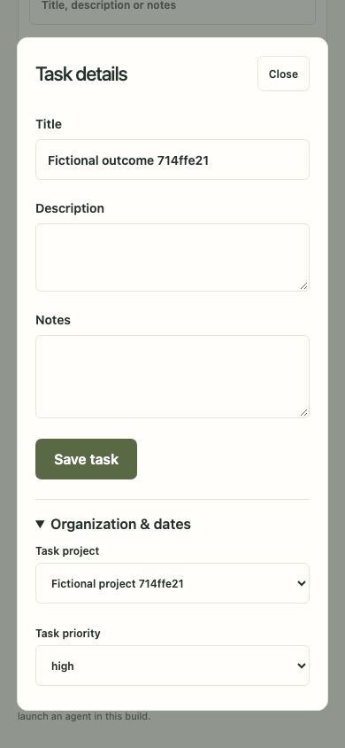
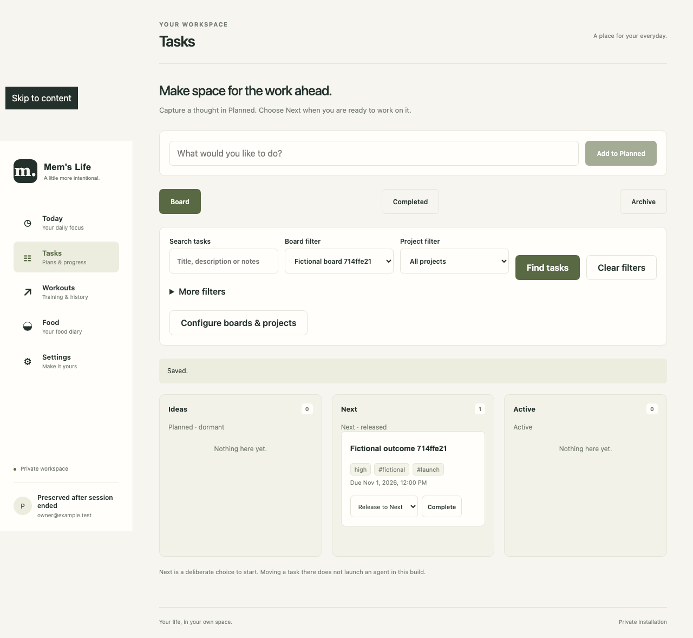
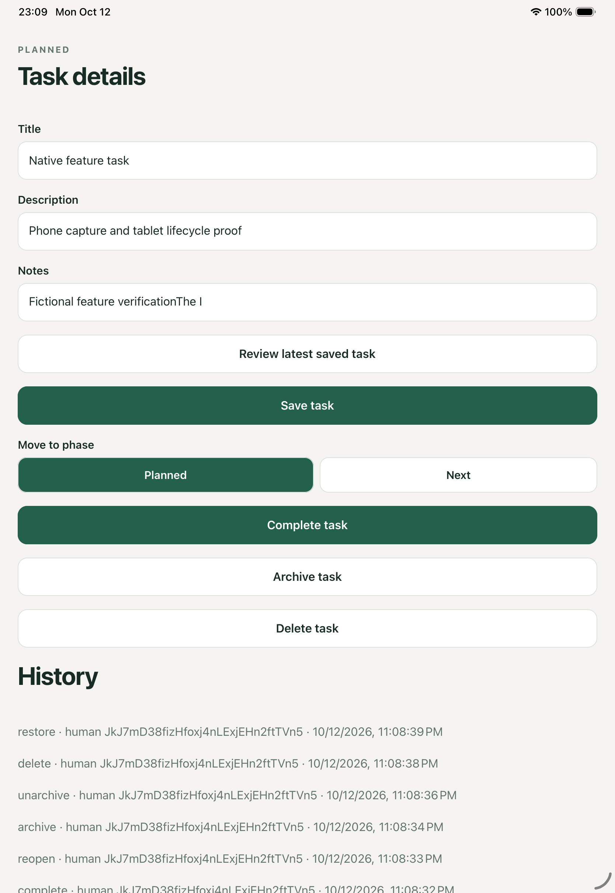

Historical scoped evidence; per-receipt source hashes/limitations govern. Raw paths are local-only references, never public links. No release readiness inferred.
Raw logs, traces, request results and original HTML indexes remain on the original workstation. They can contain active fixture session cookies. This committed index links only to reviewed copies below. These historical receipts may identify earlier source states; final validation remains a separate gate.
ad3bc83786bb1a8f6ff0e7df2b2122784172b278f00af8f3da52d9c18d0e9fa1
17e83a6b7255c2efa2d87c49569dd8939c8964be8d5c7de719b73cfcead1f9c2
25c5af4e7111a4ee1d1f884e1dd785d54151c49715361539ac88aba46059147c
a2f6c1dfa661650995a44c4dd254335dc389be3ae904f96e1b62ad9f633182b6
18195f5c39328c941deeb19b1864b535c4aa38aa520fb98d7f406b3c2c97a015
e401acafe4d4a6b0cc32fe6bd76382557b4138f1c406c65a6e314e7156396786
c814ef3509c8974cb30473ff43521558ba57569abb7518de349a8190ed4d0f6c
e645b192d895acab9c291a23c806310a60aba0c5b5b723805bb0fd0c9c5ac82c
357063ffb07f996278bae8f5f85c6a90a07e45f75d833789874b78f890f97d1f
673e4b127acffa7ef8cc1559e095f95e28b194ef8e0917356c7d4bec4fa8aba6
a84711bad56c954bcb737aa62a123b64d6a68a78e73fb0bd76b09589d21d3e88
3f9126a1e29121f42ca6098c314f6f566b578f9baa27ee0dd259771ac7a811e8
76afa4f357be07e6ff75f15bae7a0940758a258e98e503c08a4f2b22e1899945
45acfcb03122da7911d3d0daac3d62af14fac8cc52111c85bbcdfdacef5781e6
5e4ff43cb5c51980df9516aa612e96efcf71d4efd6e08b5d3bb00b2339a29574
0afb8623a0fb2632e5c90b94c45d888a9ee4f8dac4e045bf967450139e2211ed
96b66574e1a1355b3587ea402ea7b7b6347b456d8d5a5254f3bb607d00e81e24
f4e4b4a4524d5433ce8a8a7bea5dfe670206962cfa0eda65374230697efe2ddb
9749173e8dbe39acd112c86e9743a413644af3fc067bca053614533b79a9af0a
6f041011b046e8472b1cf03be0ebc37fc600817ec60b7c157a5eaac640dc81de
6492a5118359f4697b9249d9a30ae6c3d96302582b04bdb0ed025b03b4d189e6
575c9f995e851d2cc510bf8c55adc798ab8c6b3f158210dcea0f5852c790b4dc
f3b52d19f21f61b3550e9dfc60e33bb77e2babdb012f57654adbc1d5a7cd315c
fb00769777cd5ef95b631e09295c9e4e7a8a9e2eee4fbbf5ea0c81a9125a78b0
442028860e035d021a0243cfb3b9ea3b212e80d37221cc633791871d41c842e6
9f287b5e0b105e82512e85738d4c23bb3748f7501dd209c99fdd7d8b4cd63dbf
7415bf08dea040ed9c7b70549775f0fd4e0e89575c761b571e8c383eae7be21e
e8120e43d075394a18a013a7e85b25d14cf780c23051693612036bff8e99e9f2
1245ce93aec6d0eef08e0f8786ef88c8ac1ec41a8725e47b87bc796ed749571e
8fa389865f6d0f8047077d49cb6400738f3215c3a92d89f94999ce2cab4e9535
04c535c346ce47acc78e1654c1fdbf84c3ac7878c730f0b4c0d9b2ba1865b8c6
562fac7713b60eb16d3753c48590c6fbf783f090ed627b51499f8b3d888ae707
81b38724aac41dac312fd457213afd0f44842805bc50c236547df1d65f0b6fb2
feceb8359bd5f68568e66f7ef805e993cce799c642892857d0abfce1f3267ec9
02d17336155268079541615aa3824ead3698a7dd735cca8c6e8fd73fed985542
5bdbe5a173b4bd244316ce97bb77e04aac4c3f9a2669419cdfa6ffe9e0d5a6d8
2513a23e87436820fbe85134e185abcdb826b595b26c687000fccd5f3d667ac6


